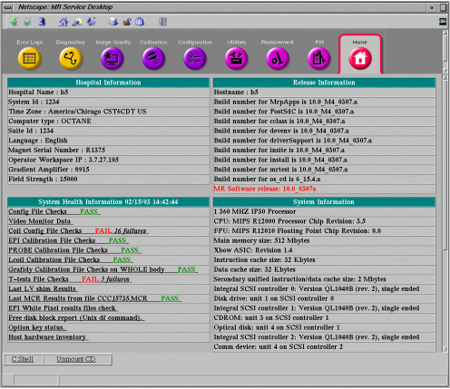
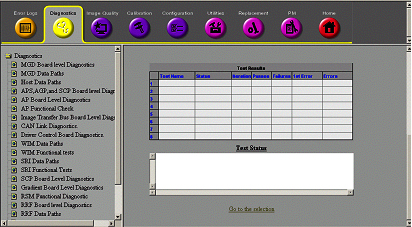
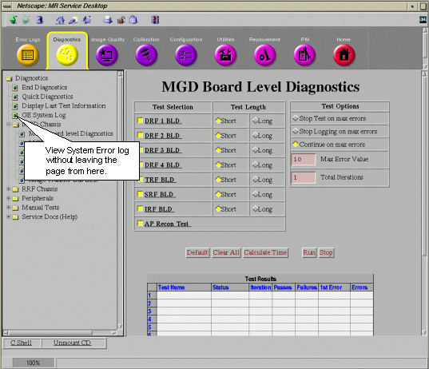
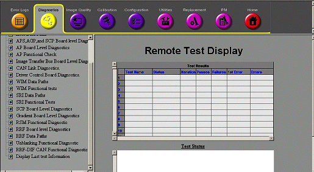
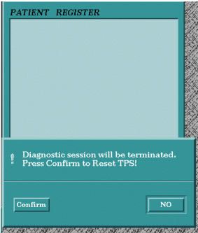
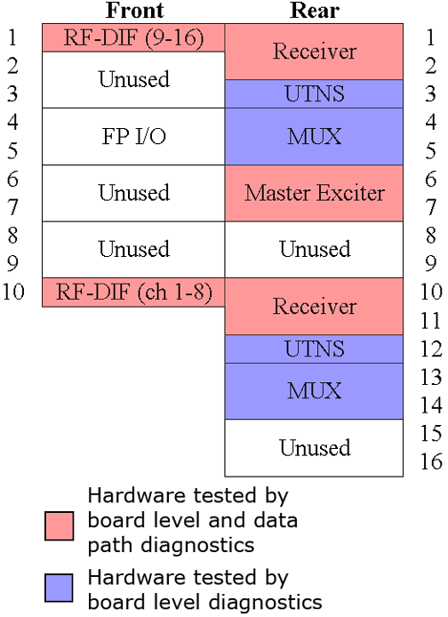

Proprietary to General Electric
Direction 5670000, Rev# 1
Optima MR450w 1.5T Service Methods
Module Version 1.0, Version Date 4/26/07
Proprietary to General Electric |
This document contains an overview of the following:
Section 1: Introduction to Diagnostics
Section 2: Accessing Diagnostics
Section 3: Running Tests
Section 4: Exiting Tests
Section 5: Accessing a Test's Theory
Section 6: Accessing a Test's Help Information
Section 7: Hardware Tested by Diagnostics
Diagnostics (disk-based tests) check components in the System Cabinet and many of the peripheral hardware connected to those components. The diagnostics can be run only when Signa software is running and generally fit into one of three categories:
Board Level checks selected functions on a board.
Data Path checks the communication path(s) from one board or module to another.
Functional Check helps the FE gauge the functionality of the hardware. These don’t automatically diagnose a failure but rather provides an output or status change that the FE can detect. This
Tests may be initiated individually. Click the [Service Tools] icon to open the Service Desktop Manager. On the Service Desktop Manager, if the Common Service Desktop (CSD) is not already displayed on the screen, select [Service Browser] and wait for the Common Service Desktop to appear. After a few seconds a window like Illustration 1 will appear.
Illustration 1: Common Service Desktop Home

Click the [Diagnostic] tab at the top of the browser. The available tests will be listed in the column on the left as in Illustration 2.
Illustration 2: Diagnostics Tab

Select the tests you want to run in the Test Selection column on the right (see Illustration 3). Some tests have test options that can be selected. Detailed information about these tests and their options can be found in the integrated help that can be accessed by clicking underlined hyperlinks (see Section 6).
Illustration 3: Example Test Selections

| NOTE: | Do not start multiple copies of tests. Multiple copies of tests can cause different anomalies such as locked-up diagnostic windows. |
Some tests allow you to choose between short and long test lengths. The short test usually performs a walking ones and walking zeroes pattern whereas the long test will perform a walking ones, walking zeroes, 0xaaaa, 0x5555, and possibly other patterns. As a result, selecting the long test will generally provide a longer and more exhaustive test. If the problem is highly intermittent then it may be desirable to run a long test.
These options are only available with the proprietary tests.
To utilize Stop Test on Max Errors option, enter a number greater than zero (0) in Max Error Value. The test will stop when the number of test errors reaches this number.
To utilize Stop Logging on Max Errors option, enter a number greater than zero (0) in Max Error Value. The test will, as the name implies, stop logging error messages when the error count reaches this number.
When Continue on Max Errors is selected, it will run until stopped by the FE (default).
Total Iterations determines how many times the selected tests will run.
Default: Selecting this will return the selections and options into a default condition.
Clear All: Deselects all selections.
Calculate Time: Clicking this button will provide you with an estimate of the total run time anticipated to complete all the selected tests.
Run: Click to start test execution on the selected components.
Stop: Click to stop execution of an active test.
Test results are displayed in a table labeled Test Results which is located under the test control buttons (see Illustration 4).
Illustration 4: Test Results and Test Status Windows

Test Name: Identifies test.
Status: Identifies the test as either pass or fail.
Iteration: Displays number of times test attempted to run.
Passes: Displays number of times test successfully completed.
Failures: Displays number of times test failed to complete successfully.
1st Error: Displays the first error encountered during testing.
Errors: Displays subsequent errors.
Messages reporting on the status of the executing tests are displayed in this window.
| NOTE: | Leaving the Diagnostics tab will abort any tests that are running. |
To the System Error log without aborting any tests a link to the GE System Error Log has been provided in the Diagnostics page.
Illustration 5: Accessing Error Log from Diagnostics Menu

This tool allows the FE or Online Center to view tests that are currently running or, if no tests are running, the last tests that were run. Tests that are running or were last run are listed in the Test Results Chart. The Test Status Window below the Test Results Chart will show a date and time when the diags were started and when the diags completed. See Illustration 6 and Illustration 7.
Illustration 6: Upper Remote Test Display Window

Illustration 7: Lower Test Display Window

The [Start Remote Display] button starts test execution.
The [Stop Remote Display] button ends test execution.
Leaving the diagnostics tab will abort any tests that are still running. A TPS Reset must be completed after any tests have been run before the system will permit scanning. There are two ways that this can be done.
All tests can be ended and the TPS Reset from this window.
Illustration 8: Ending Tests and Resetting Tips from Diagnostics Menu

If you leave the Toolbelt Desktop and go to the scan Desktop to setup a scan, a system prompt will ask for confirmation that you want to stop diags and perform a TPS Reset. After the reset successfully finishes, the system will permit scanning.
Illustration 9: Ending Tests and Resetting TPS from Scan Desktop

In proprietary mode, a test's theory is available for many tests. Help information is also available concerning each of the components inside the System Cabinet.
Illustration 10: Test Theory and Help Information

See Illustration 11 for descriptions of the displayed screens.
Clicking on any of the hyperlinks will open up a new browser window that contains the service documentation with the information requested. You can navigate within this window just as you would any Internet browser. This window operates independently of the Service Desktop so clicking hyperlinks in the documentation window will not affect the Service Desktop.
Illustration 11: Theory Information

Illustration 12: Example Help Screen

Diagnostics check components in the System Cabinet and many of the peripheral hardware connected to those components. The diagnostics generally fit into one of three categories:
Board Level checks selected functions on a board.
Data Path checks the communication path(s) from one board or module to another.
Functional Check helps the FE gauge the functionality of the hardware. These don’t automatically diagnose a failure but rather provides an output or status change that the FE can detect. This
Refer to table(s) below for a list of tested boards and peripheral hardware and how each can be tested. See Illustration 13 for the location of the System Cabinet's tested boards.
Table 1: Hardware Tested For 1.5T EXCITE Systems
| Board Level Diagnostics | Data Path Diagnostics | Functional Checks |
| CAN | CAN | |
| Coil ID | ||
| Driver Module | ||
| Gradient Subsystems | Gradient Subsystems | Gradient Subsystems |
| MDS | ||
| MGD | MGD | MGD |
| PHPS | ||
| RRF | RRF | |
| SCIM | SCIM | |
| SRI | SRI | |
| Shim Supply | Shim Supply | |
| SSM | ||
| TERM Server | ||
| UPM |
Illustration 13: Location of MGD Chassis Components and Test Status

Illustration 14: Location of RRF Chassis Components and Test Status
